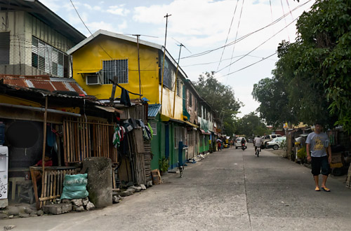

Link:
https://thomas-leduc.github.io/complexity/
Dear Sir/Madam,
You are invited to answer this online questionnaire as part of a research project on the perception of urban complexity. A gallery of
XX photos will be proposed to you for a classification by complexity of visual interpretation of the captured urban scene.
A video tutorial demonstrating how to complete the questionnaire is available at this link:
https://youtu.be/_VYU6uUH60k
| Low complexity |
Medium complexity |
High complexity |
 |
 |
 |
The researchers are very grateful for your time.
Yours sincerely,